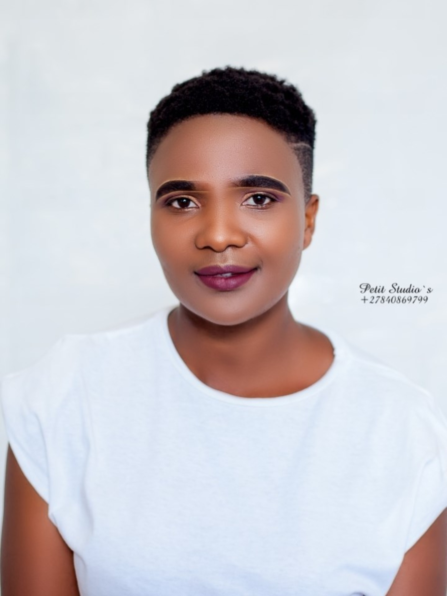

Anelisiwe Cetywayo

I would like to vist Durban city because of Golden Mile. It is one of attraction place in Durban, aThis bustling beachfront promenade is lined with high-rise hotels, entertainment complexes, shops, and restaurants. The Durban Botanic Gardens is the oldest surviving botanic garden in Africa. Umgeni River Bird Park features more than 200 species of birds, and some are the only representatives of their kind in Africa. uShaka Marine World, one of the main attractions on Durban's Golden Mile, is a water-themed wonderland packed with attractions.
Here is the list of languages that i would like to learn, Arabic, French and German. The reason why i want to learn these languagesis because of the opportunities, business and travelling
| English phrases | French phrases |
|---|---|
| I would like to buy a ticket | Je voudrais acheter un billet |
| I don’t understand | Je ne comprends pas |
| Where are the toilets? | Où sont les toilettes? |
Parliament is one of beautifully designed historic building in Cape Town. It was Built in 1885. Been one of the most dramatic political arenas in the world.
Iziko Museums of South Africa offer *FREE entry to selected museums on certain commemorative days. Iziko, is an isiXhosa word, meaning ‘hearth’, and embodies the spirit of a transformed institution. Iziko seeks to celebrate our heritage whilst generating new cultural legacies.
The museum, the Stepping Stones Children’s Centre and Ons Plek, a shelter for girls. District Six Museum Foundation was established in 1989. There is also a bookshop and coffee shop